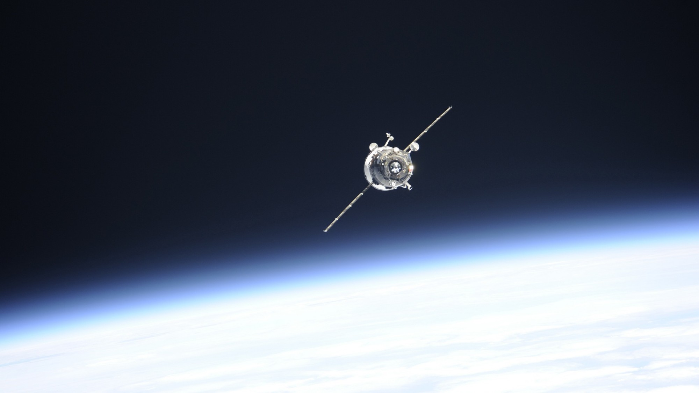
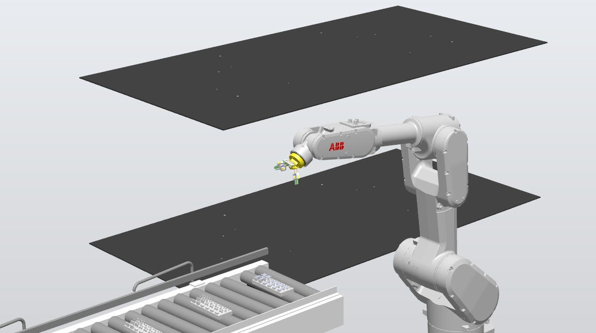

Brandon IvánLagunas Gaytán
I'm a Mechatronics Engineer from Tecnológico de Monterrey with interests in industrial automation, process improvement, data analytics, and digital transformation. I'm particularly interested in projects at the intersection of automation, data, robotics, and advanced manufacturing.
- Focus
- Advanced Manufacturing, Industrial Automation, Data Analytics & Space Technologies
- Education
- B.S. Mechatronics Engineering, Tecnológico de Monterrey, GPA 92
- Recognition
- 3rd place, Expo Ingenierías 2026
1st place, Autonomous Mechatronics Grand Prix, Jun 2024 (SKYTOL RC car) - Location
- Monterrey, México
Projects
Select a project to see the full case.
-

Automated robotic insert loading cell
A manual insert loading operation on an automotive glass molding press, taken to a robotic cell design and a working prototype.
Cycle time from 120 s to under 50 s in simulation. 3rd place, Expo Ingenierías.
Simulation and prototype View project -

Automated robotic box folding cell
A cell with two UR10 collaborative robots and vision-adjusted fixturing for four box formats, sized in Siemens Tecnomatix.
Projected 1,440 boxes a day with 1 operator instead of 4.
Projected from simulation View project -
Operations intelligence platform
A Power BI platform for 25 production lines and 300+ machines, built on a standard failure classification.
Supported action plans that moved MTTR from 75 to 53 minutes.
Used at the plant View project -

Robotic bottle packaging cell
A cell with two ABB IRB 4600 robots and Cognex inspection that replaces manual bottle packing, designed with a nine-hazard safety analysis.
Cycle time from 60 s to 38 s in simulation, with the three top-rated hazards cut from 6 to 3.
Simulation View project
About
I'm a Mechatronics Engineer from Tecnológico de Monterrey with interests in advanced manufacturing, industrial automation, data analytics, autonomous systems, and space technologies.
Most recently, I worked at Katcon México on a continuous improvement and maintenance digitalization project. I redesigned the failure reporting structure and developed a Power BI analytics platform covering 25 production lines and 300+ machines, helping identify recurring failures, support root cause analysis, and reduce MTTR from 75 to 53 minutes. I also developed TPM autonomous maintenance standards and supported the standardization of new production lines.
Throughout my degree, I worked on industry-sponsored engineering projects with companies including ABB, Carrier, Vitro, and John Deere, applying robotics, digital twins, simulation, automation, and process improvement. My projects included robotic cell development, manufacturing simulation, automated press operations, and autonomous vehicles.
I also completed a concentration in Space Technologies, with work in embedded systems, wireless communications, RF systems, orbital mechanics, and autonomous systems, including the development of an autonomous rover.
I'm Lean Six Sigma Yellow Belt certified, currently completing my Green Belt project and taking Black Belt coursework.
Education
- B.S. Mechatronics EngineeringTecnológico de Monterrey, Campus Monterrey
- Concentration in Space TechnologiesEmbedded systems, wireless communications, RF systems, orbital mechanics, autonomous systems
- GPA 92/100Graduated July 2026
Certifications
- Lean Six Sigma Black BeltCSSC, coursework in progress
- Lean Six Sigma Green BeltCSSC, in progress
- Lean Six Sigma Yellow BeltCSSC, 2026
- Basics of SAP S/4HANA ManufacturingSAP Learning, 2026
- Cobot for Material Handling Skills Pack CourseABB MyLearning, Apr 2025
- MATLAB OnrampMATLAB Academy, Apr 2025
- Artificial Intelligence Using PythonDevelop Talent & Technology, Feb 2024
- Conceptos de SOLIDWORKSXpertme, Jan 2024
Tools
- RoboticsABB IRB, Universal Robots UR3 and UR10, RobotStudio
- SimulationSiemens Tecnomatix Plant Simulation and Process Simulate
- DesignSolidWorks, Fusion 360
- AnalysisMATLAB, Simulink, Python, Power BI
Extracurricular activities
-
SKYTOL
With a teammate, I built an RC car for a race at the Autonomous Mechatronics Grand Prix. My part was programming and, mainly, the installation and electronic design.
First place, with the best time.
-
TECHO
I was in charge of digital marketing and also led the construction of emergency houses, the installation of electrical wiring, and the placement of rainwater harvesting systems in low-income communities.
-
Fundación PLAN
I took part in reforesting parks and supported shelters for foreigners, nursing homes, and children's hospitals.
Contact
Open to full-time engineering roles in manufacturing, automation and engineering development programs.